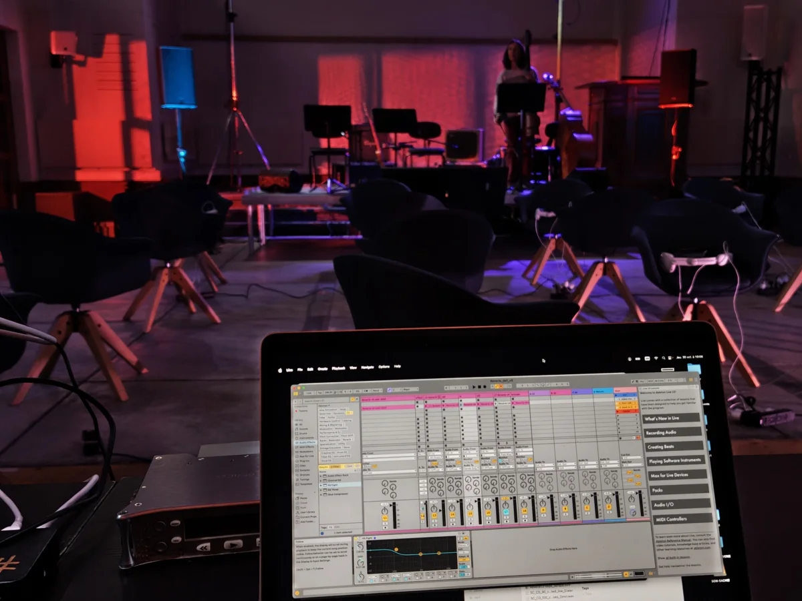

DAW · arrangement · timbre · forme
MAO créative au service de la composition
Utiliser le DAW pour organiser, transformer et développer une idée musicale, plutôt que simplement apprendre une suite de fonctions.

01
Positionnement
La session comme espace de décisions.
Le cours s’adresse aux personnes qui travaillent déjà avec un ordinateur, même de manière intuitive, et souhaitent relier plus clairement technique, écoute et composition. Une boucle, une maquette incomplète ou une session désordonnée peuvent constituer le point de départ.
Développer au lieu d’accumuler
Repérer le matériau essentiel, choisir ce qui doit varier et construire une trajectoire au-delà de la boucle.
Organiser pour mieux entendre
Rendre la session lisible afin que le routing, les groupes, les versions et les exports soutiennent le travail musical.
02
Travail
Ce que nous pouvons travailler dans le DAW.
- organisation d’une session : pistes, groupes, routing, versions et exports ;
- choix du matériau : hiérarchie entre sons, motifs, prises et samples ;
- arrangement et forme : sections, continuité, contraste et proportions ;
- timbre et transformation : synthèse, effets, traitement et spatialisation ;
- montage et automation : articulation, mouvement et précision du geste ;
- écoute critique : comparer les versions et relier technique et intention musicale.
Outils possibles
Ableton Live, Logic Pro, Reaper, Pro Tools ou un autre DAW peuvent être utilisés. Les échanges restent possibles avec des exports audio, des captures et un partage d’écran lorsque les environnements diffèrent.
03
Documents
Ce que vous pouvez préparer.
- export audio ou lien d’écoute ;
- session DAW lorsque le format est partageable ;
- captures d’écran de l’organisation ou du routing ;
- question courte sur la forme, le son, le montage ou le flux de travail.
Il n’est pas nécessaire de transmettre une session complète si un export et quelques captures suffisent à examiner le problème.
04
Format
Une séance de MAO orientée projet.
La séance se déroule en ligne, en français. Elle porte sur votre production réelle et se concentre sur les choix qui feront avancer la pièce, plutôt que sur un parcours générique de logiciel.